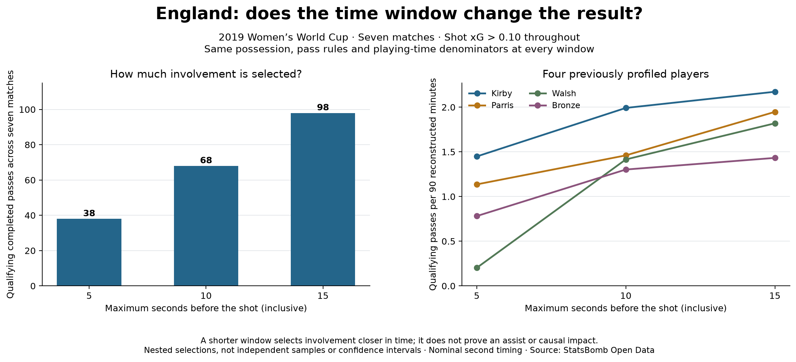

Football analyst training · Project lesson 19
Does our finding depend on 15 seconds?
A credible analyst checks how a reasonable definition changes the result. Today you will read a sensitivity check and make one small extension in Spyder.
1. Understand what changes
A pass 4 seconds before a qualifying shot is included in all three windows. A pass 8 seconds before it is included in the 10- and 15-second windows. A pass 13 seconds before it is included only at 15 seconds. “Within 5 seconds” includes the boundary at exactly 5 on our nominal second clock.
The seven matches, completed-pass rules, same-possession requirement, shot xG > 0.10 and playing minutes stay fixed. This lets us isolate the effect of the time window.
2. Read the evidence

All three totals must grow or stay the same as the window expands: every 5-second pass also qualifies at 10 and 15. This increase alone is expected, not evidence that 15 seconds is better.
3. Follow the Python logic
WINDOWS = [5, 10, 15]
for window in WINDOWS:
selected = [p for p in baseline
if 0 <= p['seconds_before_shot'] <= window]WINDOWS lists the settings. The loop repeats the selection once per setting. p is one saved pass record; its gap is the time to the nearest subsequent eligible shot. The list keeps records satisfying the gap condition.
The baseline contains all 98 passes within 15 seconds of the nearest shot meeting xG > 0.10. Shorter windows can be filtered from it: if the nearest eligible shot is too far away, another eligible shot cannot be nearer. This works because the other selection rules and xG filter are unchanged.
Next, Counter counts selected records for each player. We calculate count / minutes * 90 using the same playing-time denominator for every setting. The numerator changes; the minutes do not.
4. Run and extend in Spyder
- Open 19_time_window_sensitivity.py and run it. Find the printed totals 38, 68 and 98.
- As an independent exercise, change
WINDOWSto[5, 8, 10, 15]in a separate practice copy. In that copy, also change the output names todata/19_practice_eight_seconds.jsonandfigures/22_practice_eight_seconds.pngto preserve the published artifacts. The existing loop will include the additional setting. - Predict before running: the 8-second total must be between 38 and 68, inclusive. The 15-second total must still be 98.
- Write two sentences: what happens to Walsh versus Bronze, and why this does not rank overall passing quality.
Check your interpretation
A shorter window captures recorded involvement closer in time to a shot. It can change player comparisons. It does not establish that those passes caused the shot, were assists, or prove a general playing style. The samples overlap and are too small to support a broad quality claim.
The production evidence checker intentionally expects the documented three-window analysis. Keep the practice experiment in a separate copy until its method, checks and report are deliberately updated.
Ask your teacher to explain any line or review your two-sentence assessment. Independent explanations are the next step toward interview-ready understanding.
Keep this reference
Sensitivity-check reference · Research report · Full methods